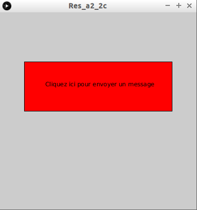

Dans cette activité, nous allons programmer le client.
Saisissez, analysez et testez ces programmes
Le serveur :
import processing.net.*;
Server s;
void setup(){
s = new Server(this,6500);
}
void draw(){
Client c = s.available();
if (c!=null){
String msg=c.readString();
println(msg);
s.write("OK, message bien reçu");
}
}
Le client :
import processing.net.*;
Client c;
void setup(){
c = new Client(this, "localhost", 6500);
c.write("Coucou, je suis le client");
}
void draw(){
if (c.available()>0){
String msg=c.readString();
println(msg);
}
}
Il est possible de tester cet exemple en utilisant une seule machine. Il faut alors lancer 2 fois Processing (une pour le client et l'autre pour le serveur). Vous pouvez aussi tester cet exemple sur 2 machines différentes (une pour le client et une pour le serveur). Dans ce cas, attention a bien modifier le code côté client en remplaçant "localhost" (ligne : "c = new Client(this, "localhost", 6500);") par l'adresse IP de la machine jouant le rôle du serveur.
Dans tous les cas, ATTENTION de lancer le programme côté serveur avant de le lancer côté client.
Analysons cet exemple :
Côté serveur : rien de nouveau
Coté client :
Nous commençons par créer une instance de la classe Client :
Client c;
...
c = new Client(this, "localhost", 6500);
Le constructeur de client prend 3 paramètres : this, l'adresse IP du serveur, le port.
Dans notre exemple, le client envoie un message au serveur dès le lancement du programme (fonction "setup") :
c.write("Coucou, je suis le client");
Comme vous pouvez le constater, le client envoie une chaîne de caractères vers le serveur à l'aide de la méthode "write".
Nous retrouvons, comme dans le cas du serveur, une méthode "available" :
if (c.available()>0){...}
La méthode "available" de la classe Client (à ne pas confondre avec la méthode "available" de la classe Server), renvoie un nombre. Si un message, en provenance du serveur, est prêt à être lu par le client, "c.available()" est alors supérieur à zéro.
Les lignes :
String msg=c.readString();
println(msg);
seront exécutées uniquement si un message, en provenance du serveur, est prêt à être lu.
String msg=c.readString();
La variable "msg" (de type chaîne de caractères), contient le message qui a été envoyé par le serveur (la méthode "readString" renvoie le message envoyé par le serveur (ce message est de type String).
Résumons l'échange "client-serveur" :
En vous inspirant de ce qui a été fait dans le "À faire vous-même 2.1", créez un client qui enverra un message au serveur uniquement après que l'utilisateur ait appuyé sur un "bouton".
Reprenez l'exemple proposé dans le "À faire vous-même 2.2" mais avec cette fois un serveur et 2 clients (le code pour les 2 clients sera identique). Vous pouvez utiliser une seule machine pour le serveur et les 2 clients (vous devez alors ouvrir 3 fois Processing) ou utiliser 3 machines différentes (attention à bien renseigner l'adresse IP du serveur).
Comme vous l'avez sans doute remarqué, si vous envoyez le message depuis un client, les 2 clients recevront la réponse du serveur (même le client "qui n'a rien demandé"). La réponse du serveur est envoyée à tous les clients connectés, on parle de "broadcast".